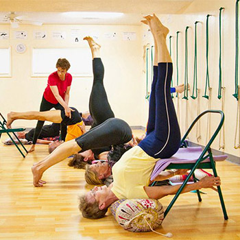

Sari la Secţiuni ale acestei pagini Ajutor pentru accesibilitate Apasă pe
alt +
/ pentru a deschide acest meniu
Facebook
Creează un cont nou Ai fost blocat(ă) temporar
Ai fost blocat(ă) temporar
Se pare că ai utilizat această funcţie în mod incorect. Ţi-a fost blocat temporar accesul la funcţie.
Română Čeština English (US) Slovenčina Русский Tiếng Việt Deutsch Français (France) Български Polski Español
Înscrie-te Conectează-te Messenger Facebook Lite Watch Persoane Pagini Categorii de Pagini Locuri Jocuri Locaţii Marketplace Facebook Pay Grupuri Joburi Oculus Portal Instagram Locale Strângeri de fonduri Servicii Centrul de informaţii despre alegeri Despre Creează o reclamă Creează o Pagină Dezvoltatori Cariere Confidenţialitate Module cookie Opţiuni
Condiţii de utilizare Ajutor Setări Jurnal de activităţi
Facebook © 2021